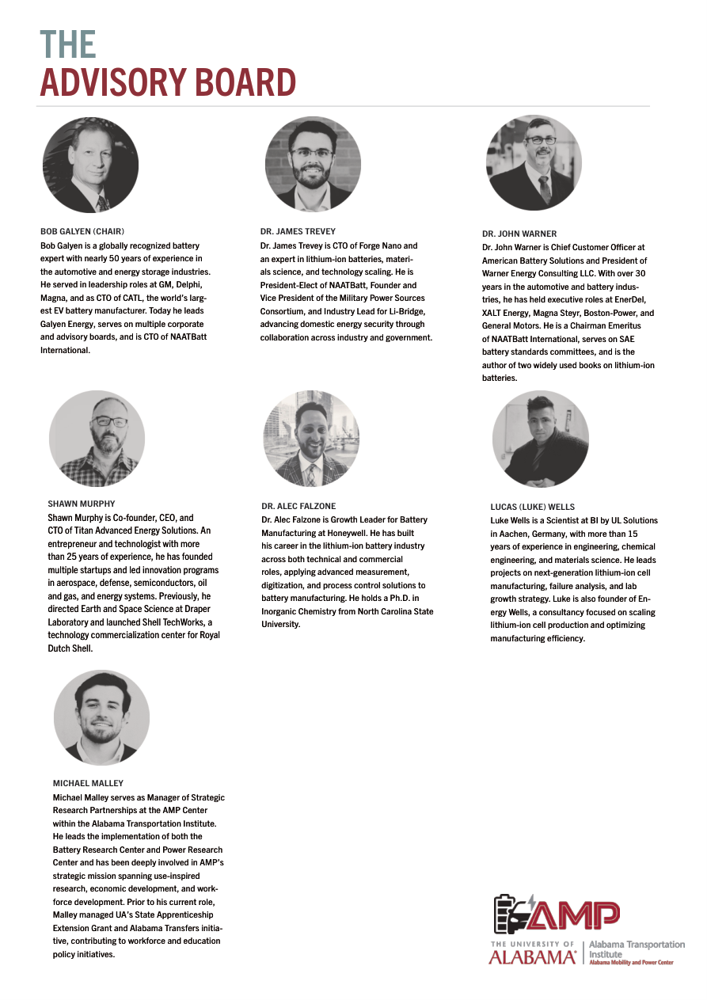

What AMP does
One center, three connected lanes of innovation.
The source packet describes AMP as an integrated environment for battery development, grid resilience, electrification, business intelligence, and hands-on workforce training.
Battery Research Center
Pouch-cell pilot manufacturing, materials characterization, smart automation, failure analysis, and electrochemical testing from lab scale to manufacturing readiness.
Power Research Lab
Grid simulation, electrification research, connected energy systems, 5G ORAN communication, and real-world validation for resilient infrastructure.
Workforce & Consortium
Training aligned with real equipment, industry-informed curriculum, and a growing network of partners shaping the mobility and power ecosystem.
Facilities at a glance
Built for testing, validation, and scale-up.
Battery Research Center
- Material characterization and quality control
- Slurry mixing, coating, drying, calendaring, slitting
- Coin cell and pouch cell fabrication
- Cycle-life, aging, and high-current testing
- Temperature chambers from -40°C to 180°C
Power Research Lab
- ~10,000 sq ft indoor lab + outdoor equipment pad
- 2 MW AC inverter capacity and 1 MW DC-DC conversion
- 1.25 MW diesel generator / microgrid system
- 250 kWh BESS, expandable to ~1.5 MWh
- Private 5G ORAN network and 12 charging stations
Source packet visuals
Actual page art from the PDFs, used as design material.
These previews are rendered directly from the AMP brochure and one-pagers, so the page carries the packet’s own photography, logo treatment, and layout language.
Brochure cover
Uses the packet’s primary branding and opening pitch.
Battery research
Pilot manufacturing, testing, and materials language from the one-pager.
Power research
Grid simulation, electrification, and resilience framing from the PDF.

Event program
Shows the committee/bios styling and event-photo treatment from the packet.
People & partners
Leadership, advisory boards, and steering committees.
AMP’s materials highlight research leadership plus advisory groups spanning battery research, power research, and workforce development.
Battery Research
- Luke Wells — Engineering Manager
- Material validation
- Pilot manufacturing
- Testing & failure analysis
Power Research
- Michael Malley — Director of Research Programs
- Grid resiliency
- Electrification infrastructure
- Connected systems
Advisory board names in the packet
- Bob Galyen
- Dr. James Trevey
- Dr. John Warner
- Shawn Murphy
- Dr. Alec Falzone
- Lucas (Luke) Wells
Workforce steering group
- Kevin Taylor
- Barry May
- Dr. Joshua Bittle
- Dana Bubonovich
- Ajay Gnanasekaran
- Renu Dalal
Why it matters
AMP helps turn research into deployable infrastructure.
From consumer insight and deployment planning to manufacturing validation and grid testing, the platform is built to reduce technical risk and accelerate real-world adoption.
Validate materials
Optimize cell design
Improve yields
Reduce deployment risk
Train the workforce
Contact
Start here.
amp.ua.edu
ampcenter@ua.edu
amp.contact@ua.edu
(205) 348-2818
Built from the source packet
AMP Battery Research Center, AMP Power Research Lab, AMP 11x17 brochure, and the committee bios/program PDFs.
Visit amp.ua.edu